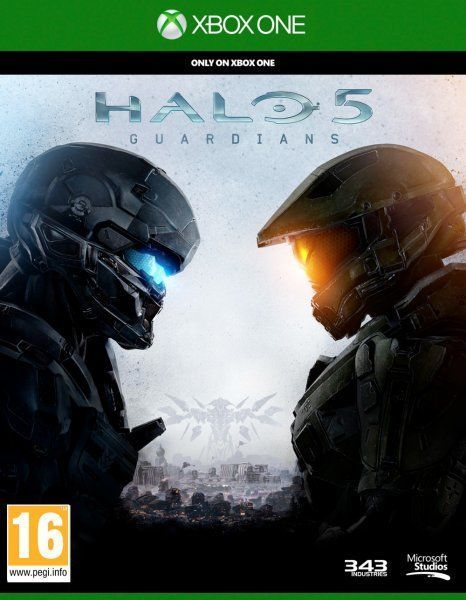
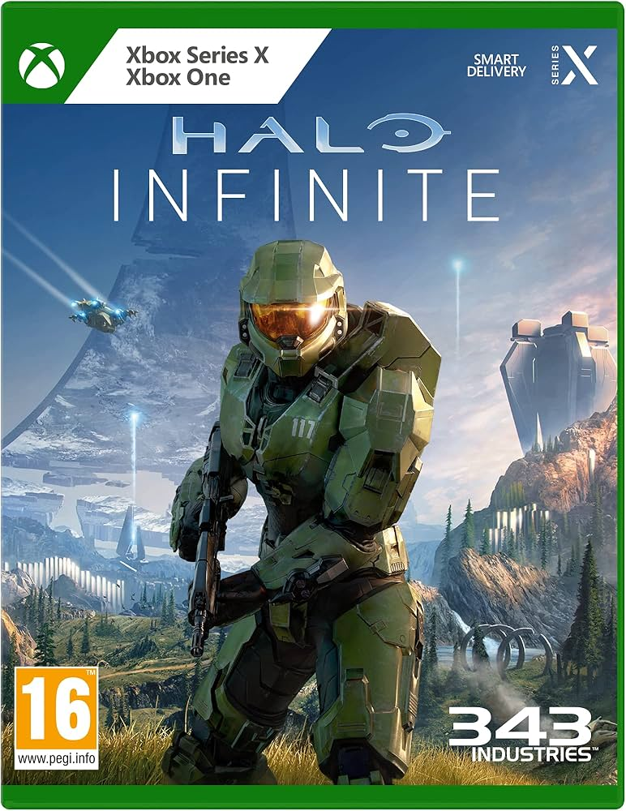
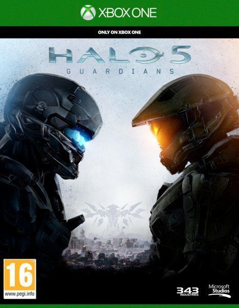
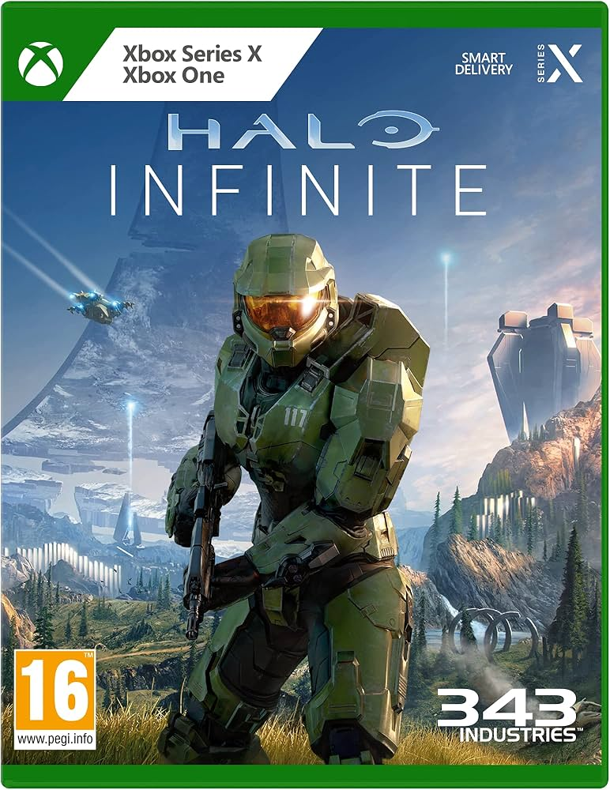

Halo es una franquicia de videojuegos de ciencia ficción militar creada por Bungie y actualmente gestionada y
desarrollada por 343 Industries,
una filial de Xbox Game Studios.
La serie se centra en una guerra interestelar entre la humanidad y una alianza teocrática de alienígenas conocidos como
Covenant. Más adelante se suman más amenazas como los Floods y los Prometeos.
El Covenant es guiado por sus líderes religiosos, los Profetas, y adoran a una antigua civilización conocida como los
Forerunners, quienes perecieron en combate con el parásito Flood.
Muchos de los juegos se centran en las experiencias de John-117 (Master Chief), un súper soldado biológicamente
mejorado, y su compañera inteligencia artificial (IA), Cortana.
El termino «Halo» se refiere a las mega estructuras Halo: grandes plataformas artificiales habitables en forma de
anillos, instaladas en el espacio exterior.
El juego fue creado originalmente por Bungie y mÁs tarde fue manejado por 343 Industries bajo Microsoft.
Hasta la fecha, la franquicia Halo ha vendido mÁs de 81 millones de copias en todo el mundo.
Halo estÁ disponible para Xbox, Xbox 360, Xbox One, Xbox Series X/S y PC.
El inicio de todo. Lanza a Master Chief al combate en el primer Halo ring.
El Jefe Maestro defiende la Tierra de una invasión Covenant, mientras un Élite llamado el Inquisidor descubre la verdad detrás de los Anillos Halo.
Una nueva era. Mundo abierto, nueva historia y el regreso del Jefe Maestro.
Un escuadrón de soldados de élite lucha por sobrevivir en una ciudad ocupada por los Covenant tras una invasión sorpresa.
Narra la caída del planeta Reach a manos del Covenant, vista desde la perspectiva del Noble Team, un escuadrón de Spartans.
El Jefe Maestro despierta en un mundo desconocido y enfrenta a una nueva amenaza: los Prometeos y su líder, el Didacta.
Mientras el Jefe Maestro sigue su propio camino, el Spartan Locke lidera un escuadrón para traerlo de vuelta y detener una nueva amenaza galáctica.
El Jefe Maestro explora Zeta Halo para enfrentar a los Desterrados y descubrir el destino de Cortana.
 


